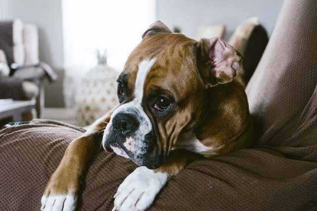
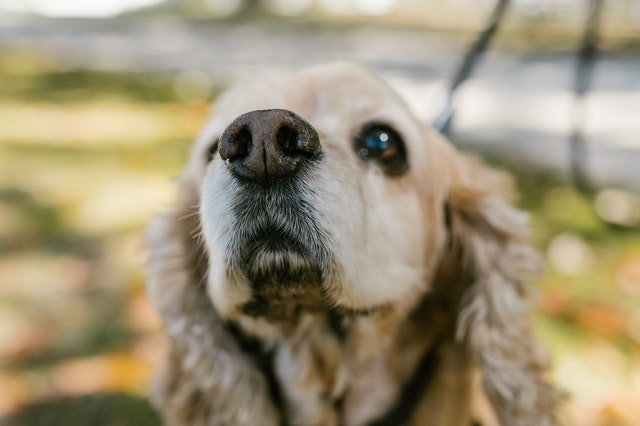

Envision the scene. It’s early and your dog finished his morning business. You fill his food bowl with breakfast, and he scarfs down the kibble. A few minutes later the sound is unmistakable: your dog burps.
Does this happen regularly to your pup? Does he eat and then belch? Burping is common in dogs. Most of the time the bodily function is harmless. Sometimes it may be a cause for concern.
To keep your dog healthy, we always recommend getting covered with pet insurance for peace of mind. One of our favorites is Lemonade pet insurance. Lemonade Pet Insurance starts at $10 a month and will cover up to 90% of medical bills in case of a disease or infection that sends your pup to the vet. Burping and belching can also be caused by diet or activity; Lemonade’s preventative plans will keep your pup healthy to avoid burping and belching in the first place.
If your dog passes gas very frequently or the smell is particularly foul, it may signal issues like inflammatory bowel disease or intestinal parasites.
Don’t jump to the worst conclusion if your dog belches a time or two. Be mindful of his regular activities. If your dog’s burping behavior changes suddenly, then it’s time to talk to your vet.
Lemonade Pet Insurance offers one of the most customizable and comprehensive pet insurance products on the market helping pet parents be prepared for any unexpected vet bills, while saving on routine care. Starting at $10 a month, a Lemonade base policy includes accident and illness coverage and covers the cost of diagnostics, procedures, and medications related to an accident or illness. Lemonade also offers industry leading preventive care packages designed to keep your pet healthy and helps cover expenses you’re already paying for. The preventive packages cover routine care like your pet’s annual exam, blood tests, vaccinations, and access to live medical chat.
Dogs burp for the same reason humans do: There’s too much air in their stomach A burp signals air is escaping from the esophagus. Also, there could be excess water in your pup’s stomach from swallowing too much air. Most of the time eating and drinking too quickly causes your dog to burp.
Wag! offers this scientific explanation for when your dog burps, “Gas will form from the interaction of alkaline foods or foods that have a high pH level, digestive enzymes, and stomach acids. The gas that builds in the gastrointestinal tract will escape either as a burp or as flatulence. Aerophagia is the most common cause of why your dog is burping. This is simply when your dog swallows an excessive amount of air.”
Another potential cause is your pup’s diet. A change in food may make her burp more frequently. If you notice an increase in your pooch passing gas, think if you made changes to their diet recently. Consuming “human” food may also make your dog gassy.
Some dog breeds are more partial to passing gas. Boston Terriers, Boxers, Bulldogs, and Pugs have pushed-in faces which can cause these dogs to swallow air while they eat. As you’ve learned, swallowing air while eating can leads to excess gas in the digestive tracts, which leads to burping.
Pay attention the next time your pup eats. His burp sounds very similar to the noise humans make when they belch
Unfortunately, sometimes excessive burping can be a sign of bloat. However, most of the time, when your dog belches it’s not a cause for concern.
Veterinarian Marie Haynes told Petful, “There is a good chance that the burping is normal. Some dogs will burp excessively because of a food allergy [or other medical causes]; however, if you are mostly noticing the burping after drinking water, this is likely not the case.”
On the other hand, excessive burping could be a sign of something serious. If your dog burps a lot (think: not just after quickly consuming dinner) you should contact your vet. Your dog could be suffering from one of these digestive disorders:
If your dog passes gas very frequently or the smell is particularly foul, it may signal issues like inflammatory bowel disease or intestinal parasites.
Don’t jump to the worst conclusion if your dog belches a time or two. Be mindful of his regular activities. If your dog’s burping behavior changes suddenly, then it’s time to talk to your vet. Pet Insurance can be a life savor if your pup is experiencing symptoms and is in need of a procedure.
Lemonade Pet Insurance offers one of the most customizable and comprehensive pet insurance products on the market helping pet parents be prepared for any unexpected vet bills, while saving on routine care. Starting at $10 a month, a Lemonade base policy includes accident and illness coverage and covers the cost of diagnostics, procedures, and medications related to an accident or illness. Lemonade also offers industry leading preventive wellness packages designed to keep your pet healthy, and helps cover expenses you’re already paying for. The preventive packages cover routine wellness like your pet’s annual exam, blood tests, vaccinations, and access to live medical chat.
There are ways to keep your pup from passing so much gas. Try giving them less water to drink. Of course, if she is very thirsty, don’t withhold water from your dog.
Another way to stop food gulping is to put your dog’s food in a slow-feed bowl. These types of bowls can improve digestion and reduce the chances of after-eating vomiting and burping. If you don’t have a slow-feed bowl, try giving your dog smaller portions throughout the day as opposed to one large meal.
Good food can decrease burping, too. Wag! says, “Look for a food that is highly digestible and is low in fat and fiber. Do make sure that your dog’s food does contain an acceptable amount of fiber for normal digestion. Avoid soy, dairy, peas and beans in your dog’s diet.”
Try adding water to your dog’s food bowl or elevating it slightly. These tactics will slow down eating because it forces your dog to lap up her food.
The veterinarians at Ruff Ideas also recommend giving your dog a digestive enzyme. These dietary additives have been shown to improve digestion. Remember: talk to your vet before you make any dietary changes.